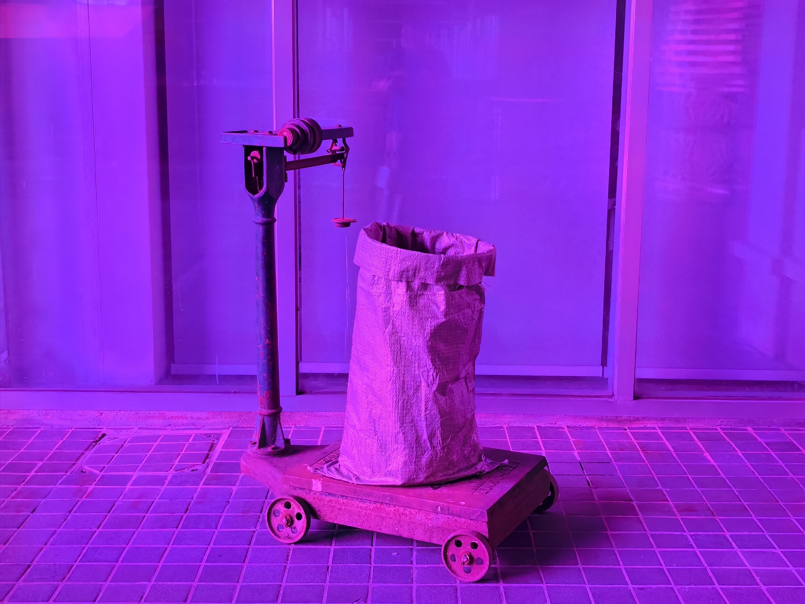

ARTWORKS
The Weight Lost

Introduction
Tied to the site of the work's original presentation, the former Nanjing Tobacco Factory, The Weight Lost recreates a slice of the scene in which the officially designated agency purchased tobacco from farmers, based on the recollections of the artist's elders. According to the recollection, the official agency, which was in a monopolistic position, often deducted the tobacco sold by the farmers through various means: about half of the tobacco was not counted as part of the purchase, but was pocketed by the staff of the agency, which also aggravated the long-term poverty of the farmers.
In the scenario of The Weight Lost, the seemingly filled woven sacks are actually empty, placed on scales that do not show the slightest weight: the “lost weight” refers both to the portion of tobacco skimmed off the table in corrupt monopoly tobacco purchases and to the body weight of farmers, who were forced by state policy to grow tobacco and lost weight through hard labour and poverty.